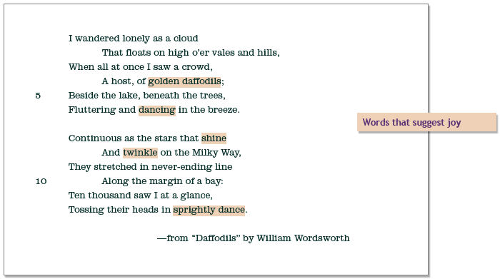

Mood
mood—The feeling created by a poem or story. Writers usecarefully chosen words, phrases, and images to create a mood.
Poets use words, images, and rhythm to create an overall feeling ormood. If they are successful, they evoke this feeling in the reader.
EXAMPLE
In this poem about a beautiful sight on a spring day, Wordsworth hascreated a sunny, joyful mood. Note the words dancing, shine, twinkle,and sprightly dance. These are happy words. These and other wordscreate a light, airy feeling.
What kind of feeling do these stanzas from “Daffodils” evoke in you? Look for words that express emotion or feeling.
